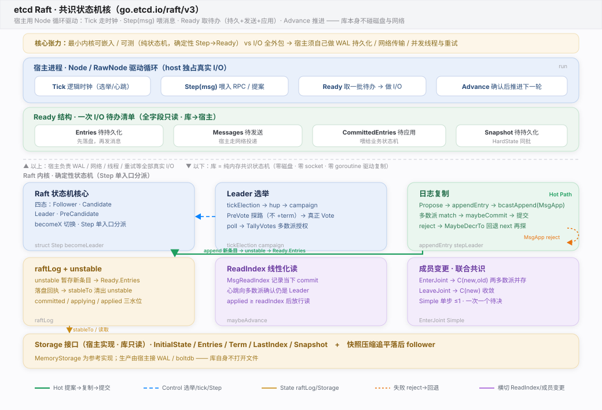
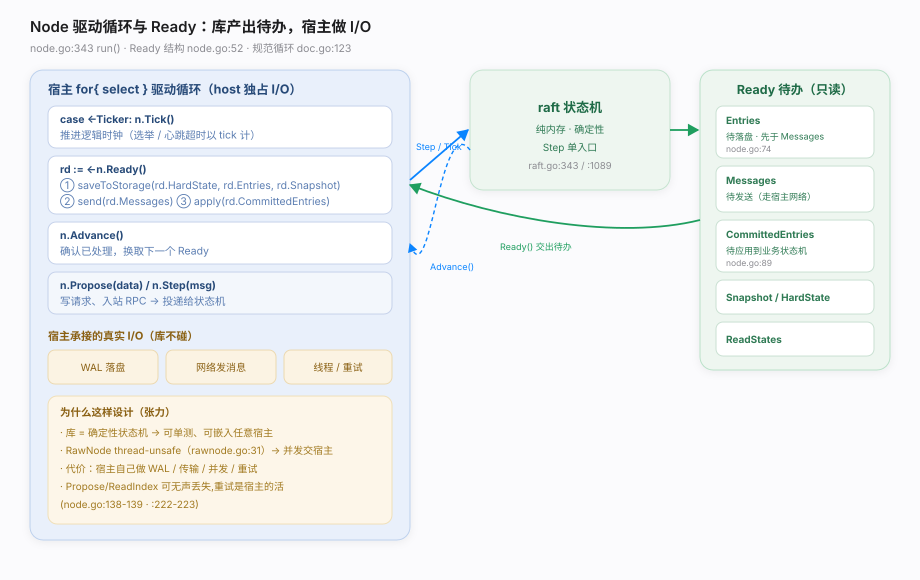
Tick 走逻辑时钟、Step(msg) 喂入提案与 RPC、Ready() 取回一批只读待办（Entries 待落盘、Messages 待发送、CommittedEntries 待应用、Snapshot 待持久化）、做完真实 I/O 后 Advance() 推进；库内部是纯内存的确定性状态机，Step 单入口按 term 与四态（Follower/Candidate/Leader/PreCandidate）分派，Leader 把提案 append 进 unstable、bcastAppend 广播 MsgApp、多数派 match 后 maybeCommit 提交，reject 则回退 next 重探——所有磁盘与网络 I/O 全外包给宿主（换来可测/可嵌），成员变更支持联合共识，这正是 etcd/raft 区别于 hashicorp「电池全含库」的定义性设计。Ready.Entries/HardState 必须先落盘、才能发 Ready.Messages（node.go:74-80、doc.go:79-82），否则违反 Raft 安全性。Advance()（同步模式）：读了 Ready 却不 Advance，run() 不会给下一个 Ready（node.go:435-445）——除非启用 AsyncStorageWrites（此时不可调 Advance，node.go:176-177）。node.go:148-152）。Propose 当"提交成功"：Propose 只是投递，可能被丢弃，需宿主重试并等条目出现在 CommittedEntries（node.go:138-139、doc.go:152-154）。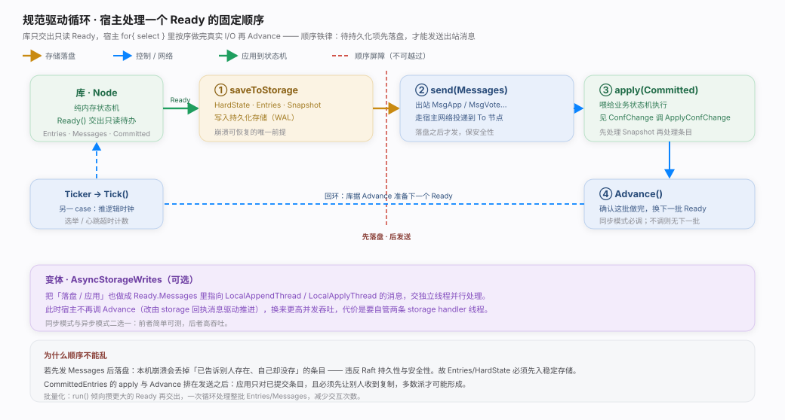
Node 接口的四个动作让宿主驱动。宿主跑一个 for{ select } 循环：Tick() 走逻辑时钟、Step(msg) 喂入提案与 RPC、Ready() 取一批只读待办（持久化 + 发送 + 应用）、做完真实 I/O 后 Advance() 推进。核实基准：node.go（Node 接口 :132、run :343、Ready 结构 :52）、rawnode.go、doc.go（规范循环 :123）。Tick/Step/Ready/Advance 四动作，宿主跑 for{ select }——Tick 走逻辑时钟、Step（含 Propose/ReadIndex）把消息喂进纯内存状态机、Ready() 交出只读待办清单（Entries 待落盘、Messages 待发送、CommittedEntries 待应用、Snapshot/HardState 待持久化）、宿主按"先持久化再发送再应用"的顺序做完全部真实 I/O 后 Advance() 换下一批；库自身不 open 文件、不 new socket、不起驱动复制的线程，把 WAL / 网络 / 并发 / 重试全外包给宿主——这正是它可单测、可嵌入任意宿主的根基。run() 注释说明它倾向于攒更大的 Ready 再交出（node.go:355-362），减少交互次数；宿主循环里一次处理整批 Entries/Messages。doc.go:172 起）；代价是宿主要自己管两条 storage handler 线程。ElectionTick 建议 = 10 * HeartbeatTick（raft.go:134），避免误判失联；tick 实际间隔由宿主的 Ticker 决定。RawNode（rawnode.go:34，thread-unsafe），省一层 goroutine。Ready.Messages 得宿主 send、Ready.Entries 得宿主写盘——库只产出待办。HardState/Entries，再发 Messages"（node.go:74-80）。Advance()：run() 在交出 Ready 后 arm advancec，不 Advance 就没有下一个 Ready（node.go:435-445）。Advance()：AsyncStorageWrites 下 Advance 会 panic（rawnode.go Advance 里 asyncStorageWrites 判断，node.go:176-177）。Propose：提案可能被静默丢弃，"it is user's job to ensure proposal retries"（node.go:138-139）。| 动作 | 内部 channel / 处理 | 源码 |
|---|---|---|
Tick() | tickc（buffered 128）→ rn.Tick() | node.go:433-434、:323 |
Propose(data) | propc → r.Step(MsgProp) | node.go:386-393、:471 |
Step(msg) | recvc → r.Step(m) | node.go:394-399 |
Ready() | readyc <- rd，然后 acceptReady | node.go:435-442 |
Advance() | advancec → rn.Advance(rd) | node.go:443-445 |
ApplyConfChange | confc → applyConfChange | node.go:400-432 |
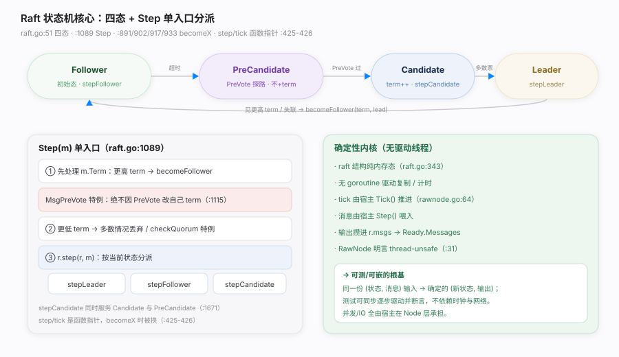
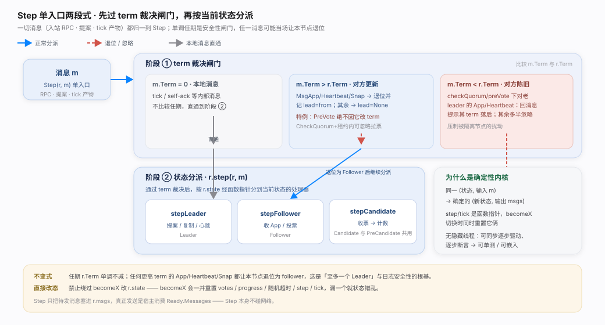
Follower/Candidate/Leader/PreCandidate）+ 单入口 Step。所有消息（提案、RPC、本地 tick 产物）都归一到 Step，先做 term 裁决、再按当前状态分派到 stepLeader/stepFollower/stepCandidate。没有驱动复制或计时的 goroutine——tick 靠宿主 Tick() 推、消息靠宿主 Step() 喂。核实基准：raft.go（type raft :343、StateType :51-54/:112、Step :1089、becomeX :891/:902/:917/:933）。Step 先做 term 裁决（更高 term 通常退位为 follower，PreVote 例外绝不改 term）、再按当前状态经函数指针 r.step 分派到 stepLeader/stepFollower/stepCandidate，状态切换统一走 becomeX 并同时重置 step/tick/votes/progress；库不含驱动复制或计时的 goroutine，tick 靠宿主 Tick 推、消息靠宿主 Step 喂、输出攒进 Ready.Messages——这份"无隐藏线程的确定性"正是 etcd/raft 可单测、可嵌入的根基。Tick/Step 驱动。stepCandidate（raft.go:1671-1673），区别只在收到的响应消息类型。Step 里直接发网络：Step 只把待发消息塞进 r.msgs，真正发送是宿主消费 Ready.Messages。Step 先比 term，可能当场退位；这是单调任期与安全性的闸门。r.state：状态必须走 becomeX，因为它们同时重置 votes、progress、随机超时等（见 reset raft.go:781）。| 状态 | step 函数 | tick 函数 | 进入方式 | 源码 |
|---|---|---|---|---|
| Follower | stepFollower | tickElection | becomeFollower | raft.go:891 |
| PreCandidate | stepCandidate | tickElection | becomePreCandidate | raft.go:917 |
| Candidate | stepCandidate | tickElection | becomeCandidate | raft.go:902 |
| Leader | stepLeader | tickHeartbeat | becomeLeader | raft.go:933 |
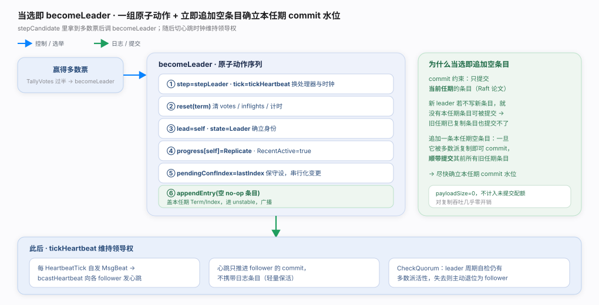
Tick() 驱动 tickElection 累加 electionElapsed，超时自发 MsgHup → hup → campaign。默认走 PreVote：先 becomePreCandidate 用 term+1 探路但不真正自增，赢得多数 pre-vote 才 becomeCandidate 真正 term++ 并发 MsgVote；poll/TallyVotes 得多数派即 becomeLeader。核实基准：raft.go（tickElection :850、hup :973、campaign :1025、poll :1075、becomeLeader :933、Step term 裁决 :1097）。注意：选举的"计时"也来自宿主的 tick——库不自带定时器。tickElection 累加 electionElapsed，超时自发 MsgHup → hup（校验非 leader、可晋升、无未应用 ConfChange）→ campaign；默认 PreVote 先 becomePreCandidate 用 term+1 探路却不真正自增（Step 更特判"绝不因 PreVote 改 term"），赢得多数 pre-vote 才 becomeCandidate 真正 term++、向所有 voter 发带 last(index,term) 的 MsgVote，poll/TallyVotes 得多数即 becomeLeader 并立即追加一条空条目确立本任期 commit 水位、tick 切到心跳——单调任期 + 日志新度 + 一任期一票共同保证选出唯一且含全部已提交日志的 Leader，PreVote 与 CheckQuorum+lease 一起把被隔离节点的扰动降到最低。campaign 带 last index/term，接收方比对）+ 拿到多数票。term+1 只是探路，赢了才在 becomeCandidate 真正 term++。tickElection 只在宿主调 Tick() 时推进；宿主 Ticker 停了，选举也不会触发。raft.go:1281-1284）。hup 会拒绝（raft.go:983），避免在配置未定时选举。| 项 | 机制 | 源码 |
|---|---|---|
| 初始状态 | Follower | raft.go:51 |
| ElectionTick | 建议 = 10 × HeartbeatTick | raft.go:130-136 |
| HeartbeatTick | leader 每 N tick 发心跳 | raft.go:137-140 |
| 随机化超时 | [electionTimeout, 2×-1) | raft.go:418-421 |
| PreVote | Config.PreVote，默认建议开 | raft.go:414、:1033 |
| CheckQuorum | leader 自检多数派活性 | raft.go:413、:1281 |
| 空条目 | 当选即 appendEntry(nil) | raft.go:961 |
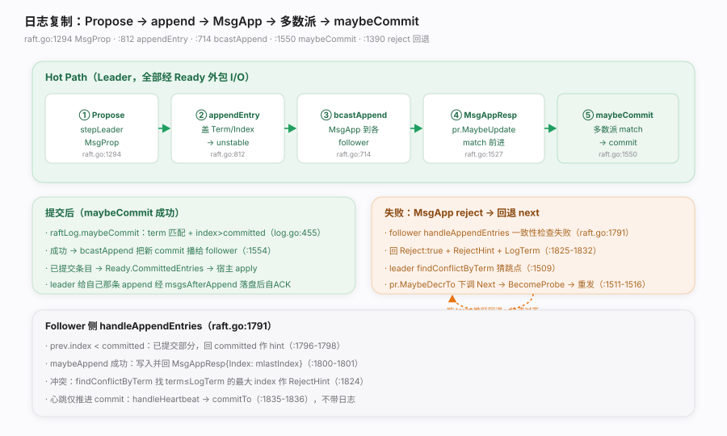
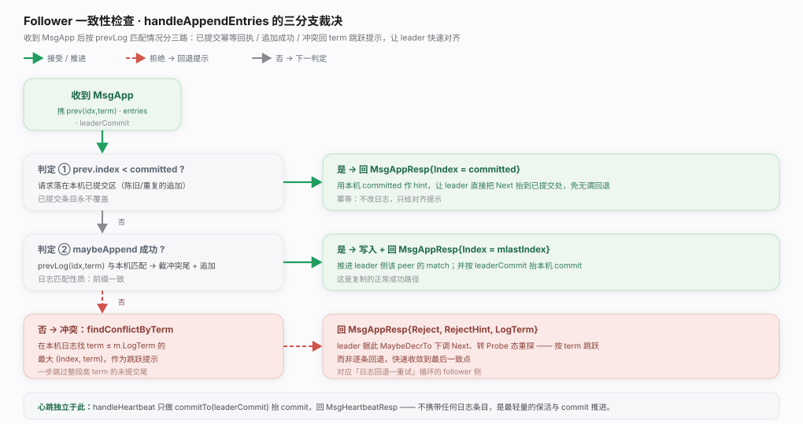
MsgProp → appendEntry 盖 Term/Index 追加进 unstable → bcastAppend 向各 follower 发 MsgApp → 收 MsgAppResp 更新 match → 多数派 match 后 maybeCommit 提交 → 已提交条目进 Ready.CommittedEntries 交宿主 apply。失败时 follower 回 Reject+RejectHint，leader 按 term 跳跃回退 Next 重探。全程真实 I/O（落盘/发送）由宿主经 Ready 承接。核实基准：raft.go（stepLeader MsgProp :1294、appendEntry :812、bcastAppend :714、maybeCommit :775/1550、reject 回退 :1390-1516、handleAppendEntries :1791）、log.go（maybeCommit :455）。appendEntry 只进内存 unstable，落盘是宿主消费 Ready.Entries；leader 对自己那条的"确认"也要等宿主落盘回执（raft.go:835-846）。maybeCommit 要求 at.term == r.Term（log.go:456-459），旧 term 条目靠新 term 条目被提交时"顺带"提交。findConflictByTerm 按 term 跳跃（raft.go:1509/:1824），比逐条快得多。Ready.Entries 必须先持久化再发 Ready.Messages（node.go:74-80），否则崩溃可能丢已"发送"但未落盘的日志。raft.go:1835-1836）。| 项 | 含义 | 源码 |
|---|---|---|
| MsgApp | 追加日志 RPC（含 prev/entries/commit） | raft.go:605 sendAppend |
| MsgAppResp | 追加回执（成功带 Index，失败带 RejectHint） | raft.go:1384 |
| Progress.Match/Next | 每 peer 已匹配 / 下一个待发 index | raft.go:1511/:1527 |
| StateProbe/Replicate | 探测态 / 稳定复制态 | raft.go:1514/:1530 |
| maybeCommit | 多数派 match 且 term 匹配才提交 | log.go:455 |
| findConflictByTerm | 按 term 跳跃找匹配点 | raft.go:1509/:1824 |
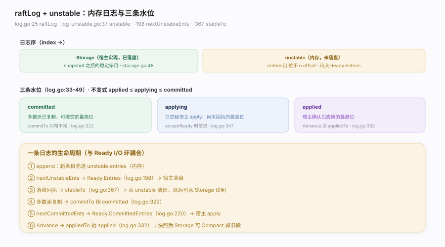
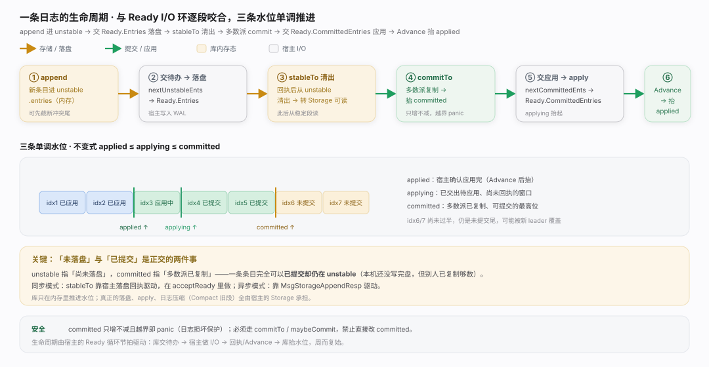
raftLog 把日志分成两段——storage（宿主实现、已落盘的稳定段）与 unstable（内存中尚未落盘的新条目/快照）——并维护三条单调水位 committed/applying/applied（不变式 applied ≤ applying ≤ committed）。一条日志的生命周期与 Ready I/O 环紧密耦合：append 进 unstable → nextUnstableEnts 交 Ready.Entries → 宿主落盘后 stableTo 清出 → commitTo 抬 committed → nextCommittedEnts 交 Ready.CommittedEntries → 宿主 apply 后 appliedTo 抬 applied。核实基准：log.go（raftLog :25、水位注释 :33-49、commitTo :322、appliedTo :332、stableTo :367、nextUnstableEnts :198、nextCommittedEnts :220）、log_unstable.go（unstable :37）。log.go:216-218）。applying 是"已交出待应用"，applied 是"宿主确认应用完"；两者之间是宿主处理 CommittedEntries 的窗口。acceptUnstable 在 acceptReady 里做（rawnode.go:430）；异步模式靠 MsgStorageAppendResp 驱动（rawnode.go:266 起）。commitTo/maybeCommit，它们含越界与 term 保护。Storage 实现（宿主）的事，库只维护水位。| 方法 | 作用 | 源码 |
|---|---|---|
| append | 新条目进 unstable（可能先 truncate 冲突尾） | log.go:133 |
| maybeAppend | follower 侧带一致性检查的追加 | log.go:109 |
| nextUnstableEnts | 待落盘的 unstable 条目 → Ready.Entries | log.go:198 |
| stableTo | 落盘回执后从 unstable 清出 | log.go:367 |
| commitTo | 抬 committed（只增，越界 panic） | log.go:322 |
| nextCommittedEnts | 待应用条目 → Ready.CommittedEntries | log.go:220 |
| appliedTo | 抬 applied（Advance 后） | log.go:332 |
| maybeCommit | term 匹配 + index 前进才提交 | log.go:455 |
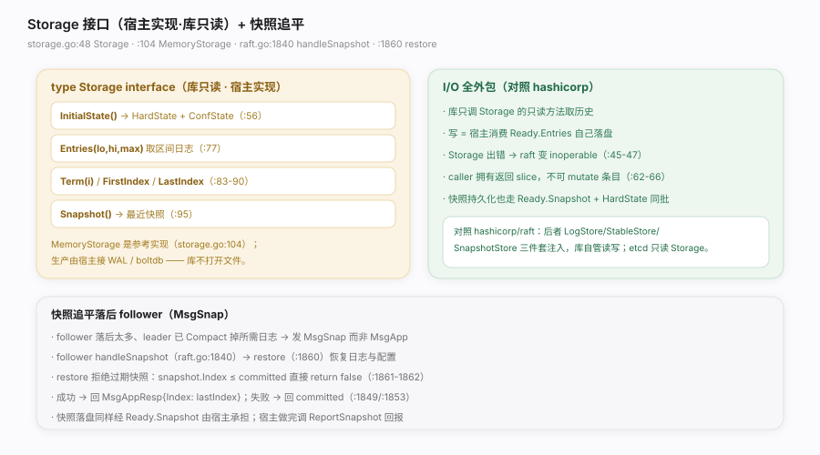
Storage（storage.go:48）是一个宿主实现、库只读的接口——库通过它读历史日志、term、初始状态与快照，但从不通过它写盘；写全靠宿主消费 Ready.Entries/Ready.Snapshot 自己落盘。落后太多的 follower 由 leader 发 MsgSnap 追平，follower handleSnapshot → restore 恢复日志与配置。核实基准：storage.go（Storage 接口 :48-96、MemoryStorage :104）、raft.go（handleSnapshot :1840、restore :1860）。对照 hashicorp/raft：后者用 LogStore/StableStore/SnapshotStore 三件套注入且库自管读写；etcd/raft 只有一个只读 Storage，写路径完全在宿主手里。Storage 写日志：不会。Storage 是只读接口；写盘是宿主处理 Ready.Entries/Ready.Snapshot 的事。Entries 返回的条目：违反约定（storage.go:62-66），因为 raft 可能把这些条目经 Ready 再转给应用。storage.go:45-47），宿主需负责 cleanup/recovery。MsgSnap 不调 ReportSnapshot：leader 会一直暂停对该 follower 的日志探测（node.go:230-240）。restore 会拒绝比当前 committed 还旧的快照（raft.go:1861-1862）。| 方法 | 语义 | 源码 |
|---|---|---|
| InitialState | 恢复 HardState + ConfState（重启用） | storage.go:56 |
| Entries(lo,hi,max) | [lo,hi) 区间日志，至少返回一条 | storage.go:77 |
| Term(i) | 条目 i 的 term（含 FirstIndex-1） | storage.go:83 |
| Snapshot() | 最近快照；未就绪回 ErrSnapshotTemporarilyUnavailable | storage.go:95/:38 |
| ErrCompacted | 请求 index 已被压缩 | storage.go:28 |
| ErrUnavailable | 请求条目不可得 | storage.go:36 |
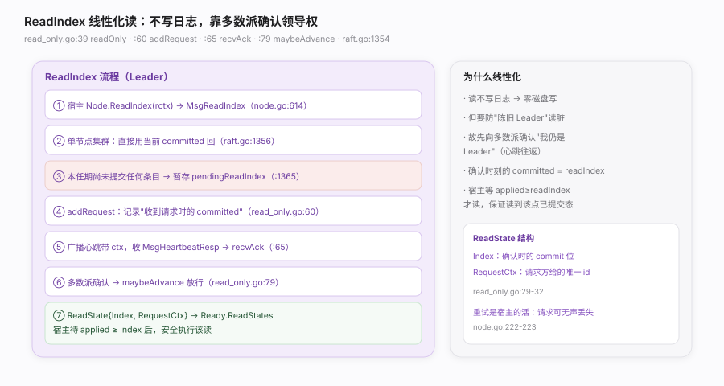
committed"作为 read index，再向多数派发心跳确认"我此刻仍是 Leader"，确认后把 ReadState{Index, RequestCtx} 放进 Ready.ReadStates；宿主等自己的 applied ≥ Index 后即可安全执行该读。核实基准：read_only.go（readOnly :39、addRequest :60、recvAck :65、maybeAdvance :79）、raft.go（stepLeader MsgReadIndex :1354）、node.go（ReadIndex :224/:614）。raft.go:1365），否则 commit 水位不可信。applied ≥ Index 就读：可能读到尚未 apply 的旧状态；ReadState.Index 是必须达到的下界。node.go:222-223）。read_only.go:24-32），重复会串号。| 项 | 作用 | 源码 |
|---|---|---|
| ReadState{Index,RequestCtx} | 交给宿主的读许可 | read_only.go:29-32 |
| readOnly.unconfirmedReads | 尚未被多数派确认的读队列 | read_only.go:43 |
| addRequest(commitIndex, req) | 记录请求时的 commit | read_only.go:60 |
| recvAck(from, ctx) | 心跳回执累计确认 | read_only.go:65 |
| maybeAdvance | 放行已确认的读 | read_only.go:79 |
| pendingReadIndexMessages | 本任期未提交前暂存 | raft.go:1366 |
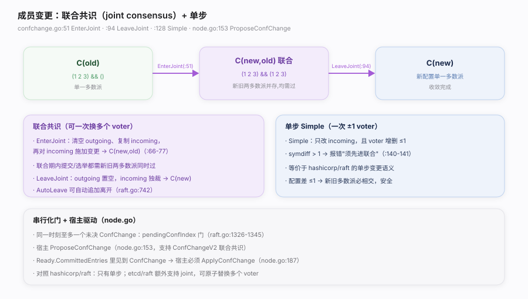
C(old) 经过一个新旧两多数派并存的中间态 C(new,old) 过渡到 C(new)，从而一次替换多个 voter；也支持 Simple 单步变更（一次 ±1 voter，语义等同 hashicorp/raft）。同一时刻至多一个未决 ConfChange，由 pendingConfIndex 门串行化。宿主经 ProposeConfChange 发起、在 Ready.CommittedEntries 见到 ConfChange 时调 ApplyConfChange。核实基准：confchange/confchange.go（EnterJoint :51、LeaveJoint :94、Simple :128）、raft.go（ConfChange 校验 :1326-1345）、node.go（ProposeConfChange :153、ApplyConfChange :187）。confchange.go:133-135）；必须先 LeaveJoint。Simple 的 symdiff > 1 会报错（confchange.go:140-141）。ApplyConfChange：Ready.CommittedEntries 里的 ConfChange 必须回调，否则库与应用的配置视图会分叉（node.go:179-187）。pendingConfIndex 门会把第二个降级成 no-op（raft.go:1326-1341）。doc.go:167-170）。| 项 | 语义 | 源码 |
|---|---|---|
| EnterJoint | C(old) → C(new,old) 联合态 | confchange.go:51 |
| LeaveJoint | C(new,old) → C(new) 收敛 | confchange.go:94 |
| Simple | 单步 ≤1 voter 变更 | confchange.go:128 |
| ProposeConfChange | 宿主发起（V2 支持联合） | node.go:153 |
| ApplyConfChange | 见到 ConfChange 时回调 | node.go:187 |
| pendingConfIndex | 串行化门，至多一个未决 | raft.go:1326 |
| AutoLeave | 联合提交后自动离开 | raft.go:742 |